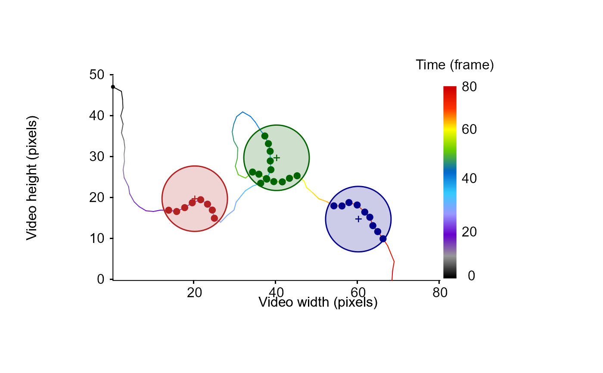

Given a data frame containing tracking information for a given tracklet (x and y coordinates) and a data frame containing the x and y coordinates of an ROI edges (vertices) or a list of several dataframe containing the coordinates of ROIs edges, this function returns a vector of the same length than the dataframe which contains the location of a particle within each specified ROI.
Arguments
- df
A data frame containing x and y coordinates (i.e., the position of a particle) in columns named "x.pos", "y.pos" for a given tracklet.
- ROIs
A dataframe containing the x and y coordinates of an ROI edges (vertices) in columns named "x.pos", "y.pos" or a list of several dataframe containing the coordinates of ROIs edges (vertices).
- edgeInclude
A logical value (i.e., TRUE or FALSE) indicating whether particles detected on the edge of the ROI should be considered inside (see
inpolygon).- order
A logical value (i.e., TRUE or FALSE) indicating whether the coordinates of the ROI edges (i.e., vertices) should be reordered according to the centroid of the ROI and angle of each vertex.
Value
This function returns a vector of the same length than df which contains the location of a particle within each specified ROI. In case the particle is not within the ROIs, the function returns "FALSE", else it returns the name of the ROI as specified in the ROIs list. In case ROIs is a dataframe or an unnamed list, the function uses generic name "ROI_n" with the position of the ROI in the list as numeric index.
Examples
set.seed(2023)
# generate a dummy tracklet
## start to specify some parameters to generate the tracklet
TrackL <-
100 # the length of the tracklet or a sequence to randomly sample tracklet's length
TrackDatTemp <-
trajr::TrajGenerate(sample(TrackL, 1), random = TRUE, fps = 1)
TrackDat <-
data.frame(
x.pos = TrackDatTemp[["x"]] - min(TrackDatTemp[["x"]]),
y.pos = TrackDatTemp[["y"]] - min(TrackDatTemp[["y"]]),
frame = TrackDatTemp[["time"]]
)
# draw the simulated particle's trajectory
MoveR::drawTracklets(list(TrackDat),
timeCol = "frame")
# generate the coordinates of three circular ROIs and add them to the plot
ROIs <- MoveR::circles(
x = c(20, 40, 60),
y = c(20, 30, 15),
radius = 8,
center = TRUE,
border = c(
adjustcolor("firebrick", alpha = 1),
adjustcolor("darkgreen", alpha = 1),
adjustcolor("darkblue", alpha = 1)
),
col = c(
adjustcolor("firebrick", alpha = 0.2),
adjustcolor("darkgreen", alpha = 0.2),
adjustcolor("darkblue", alpha = 0.2)
),
Res = 500,
lwd = 1.5,
lty = 1,
draw = TRUE
)
# assign the ROIs' identity to the location of the particle over its whole trajectory
TrackDat[["ROIs"]] <-
MoveR::assignROI(TrackDat,
ROIs = ROIs,
edgeInclude = FALSE,
order = TRUE)
# draw the position of the particle within each ROI and color them according to the ROI identity
for (i in unique(TrackDat[["ROIs"]])) {
temp <- TrackDat[which(TrackDat[["ROIs"]] == i),]
graphics::points(temp[["x.pos"]],
temp[["y.pos"]],
col =
if (i == "ROI_1") {
adjustcolor("firebrick", alpha = 1)
} else if (i == "ROI_2") {
adjustcolor("darkgreen", alpha = 1)
} else if (i == "ROI_3") {
adjustcolor("darkblue", alpha = 1)
} else{
adjustcolor("white", alpha = 0)
},
pch = 19)
}
